Trunk
Trunk
Votre playlist devient une app.
Trunk ne fournit aucun contenu. Il lit votre playlist — M3U ou Xtream Codes —, met une affiche sur chaque titre et range tout en films, en séries et en chaînes.
Bientôt sur l'App Store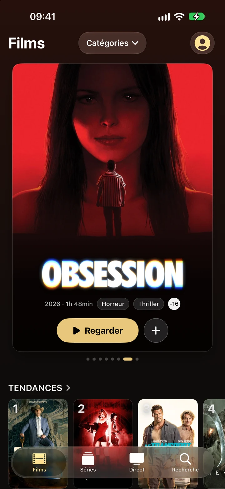
Tout ce que fait Trunk.
Touchez une fonction pour voir ce qu'elle fait.
Trunk PlusBientôt
Catalogue enrichi
Votre fournisseur envoie des noms de fichiers. Trunk les reconnaît et leur donne une affiche, un résumé, une distribution et une classification d'âge.
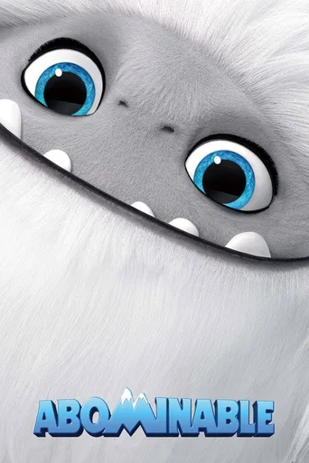
Fiches détaillées
Chaque film et chaque série a sa fiche : note, année, durée, genres, synopsis et distribution. Les séries s'y rangent par saisons et par épisodes.
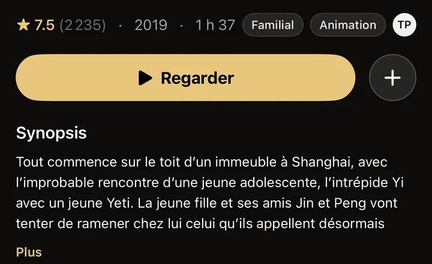
Recherche
Un champ pour chercher dans toute la playlist : un film, une série, une chaîne. Et des genres en images pour parcourir sans savoir quoi chercher.
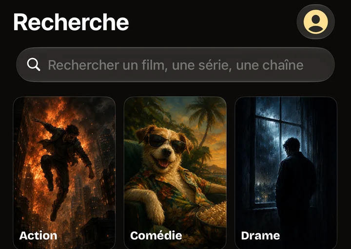
Catégories
Les catégories de votre fournisseur, gardées telles quelles et rangées dans un menu. On passe de FR 4K UHD à Documentaires d'un geste.
Classification d'âge
Chaque titre affiche l'âge conseillé, selon la classification de votre pays. Tous publics, −12, −16 : on le sait avant de lancer.
- AbominableTP
- MobLand−12
- Obsession−16
Tendances de la semaine
Ce que tout le monde regarde en ce moment. Une rangée numérotée, en tête des films et des séries.
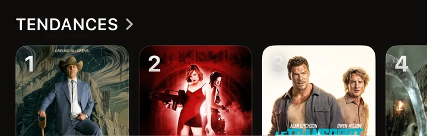
Bandes-annonces
Regardez la bande-annonce avant de lancer un film. Elle se joue sur la fiche, et peut démarrer toute seule si vous le souhaitez.
Titres similaires
Quoi regarder ensuite, à partir de ce que vous aimez. Sur chaque fiche, une rangée de films ou de séries proches.
Films similaires
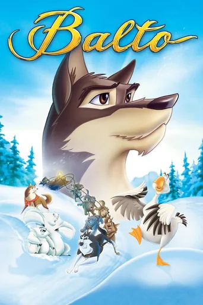
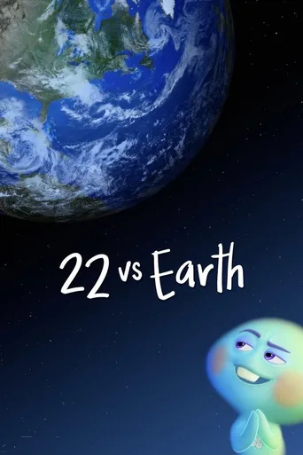
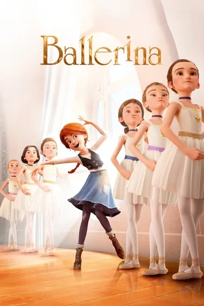
Ma liste
Mettez de côté ce que vous voulez voir plus tard. Un geste sur le + d'une fiche, et le titre vous attend dans la rangée Ma liste.
Guide TV
Sous chaque chaîne, ce qui passe maintenant et ce qui suit, avec la barre qui montre où en est l'émission. Chaque chaîne prend la couleur de son logo.
Chaînes favorites
Vos chaînes préférées, toujours en haut. Une étoile suffit pour les épingler en tête du Direct.
Historique
Retrouvez tout ce que vous avez regardé. Les chaînes récentes vous attendent en tête du Direct.
RÉCEMMENT VISIONNÉ
Six langues
Français, anglais, espagnol, allemand, italien et portugais du Brésil. Les affiches et les résumés suivent la langue de l'app.
Synchronisation iCloud
Votre liste, votre historique et l'endroit où vous en êtes, les mêmes sur tous vos appareils. Cette fonction arrive bientôt.
Ma liste · Historique · Reprise
Trunk pour iPad
Trunk sur iPad, avec une mise en page pensée pour le grand écran. Il arrive bientôt sur l'App Store.
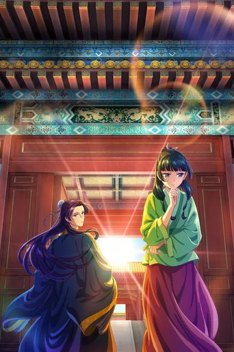
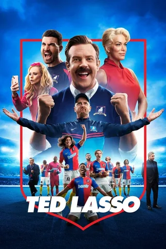
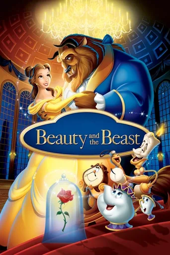
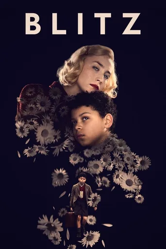
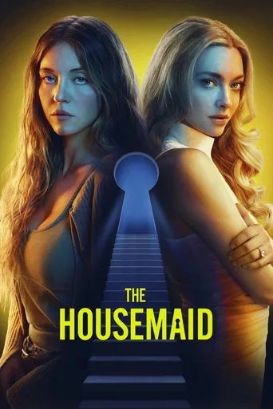
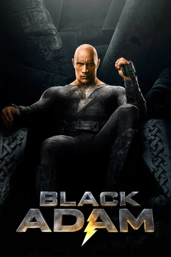
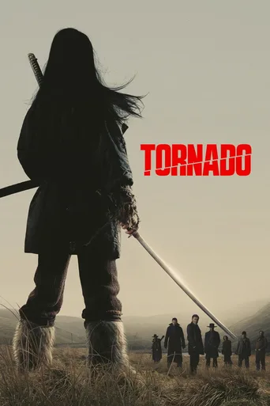
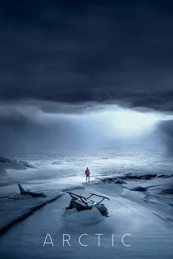
Trunk pour iPad
Lecteur tous formats
Le lecteur de Trunk lit le flux tel qu'il arrive : HLS, MPEG-TS, MP4 ou MKV, en H.264 comme en HEVC. Aucune autre app à installer.
Reprise de lecture
Reprenez exactement là où vous vous êtes arrêté. Trunk retient l'endroit de chaque film et de chaque épisode.
Sous-titres et pistes audio
Choisissez la langue du son et des sous-titres parmi celles que le flux contient. VF, VO, sous-titres français ou anglais : un menu suffit.
AirPlay
Envoyez l'image sur un téléviseur compatible AirPlay, directement depuis le lecteur. La lecture se pilote toujours depuis l'iPhone.
Vitesse de lecture
De 0,5× à 2×, pour rattraper un épisode ou savourer une scène. Le réglage se fait dans le lecteur, sans l'arrêter.
Verrouillage de l'écran
Un cadenas fige l'écran pendant la lecture : plus de touche accidentelle. On le déverrouille d'un geste.
Reconnexion automatique
Si le flux coupe, Trunk relance la lecture tout seul, plusieurs fois s'il le faut. Sans réseau, il attend son retour et repart.
Fluidité de lecture
Au plus près du direct, équilibré ou sans interruption : vous choisissez entre l'avance et la stabilité. Utile si l'image se fige par moments.
Dépannage
Quand un flux ne démarre pas, Trunk vérifie votre connexion, vos identifiants et le serveur de votre fournisseur. Il vous dit d'où vient la panne, et à qui s'adresser.
M3U et Xtream Codes
Ajoutez votre source comme votre fournisseur la donne : une adresse de playlist M3U ou des identifiants Xtream Codes. Trunk s'occupe du reste.
Playlists illimitées
Ajoutez autant de sources que vous voulez, et passez de l'une à l'autre d'un geste. La première playlist reste gratuite.
Le Trousseau de l'iPhone
Vos identifiants sont rangés dans le Trousseau d'iOS, comme vos mots de passe. Seul le serveur de votre fournisseur les reçoit.
Catalogue chiffré
Le catalogue que Trunk construit reste sur votre iPhone, chiffré. Aucun compte, aucun serveur à nous.
Wi-Fi uniquement
Un réglage pour ne jamais lire en données mobiles. Votre forfait reste intact.
Trunk pour Apple TV
Trunk sur Apple TV, à la télécommande, sur le grand écran du salon. Il arrive bientôt sur l'App Store.
Trunk pour Apple TV
Des fichiers devenus des affiches.
Chaque film et chaque série s'enrichit tout seul d'une affiche, d'un synopsis, du casting et de la classification d'âge. Ce que votre fournisseur n'envoie pas, Trunk va le chercher.
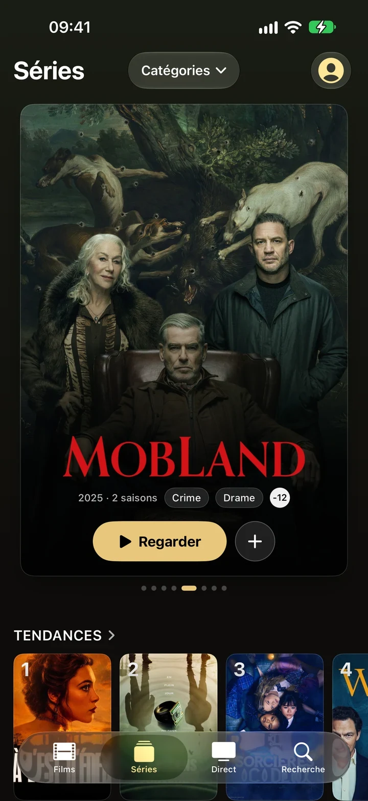
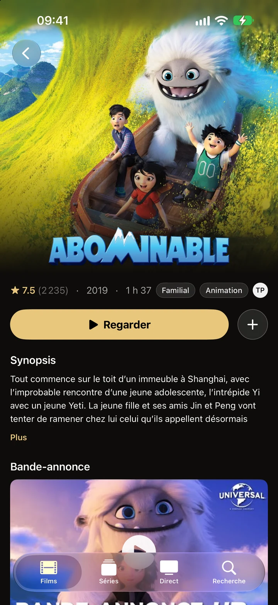
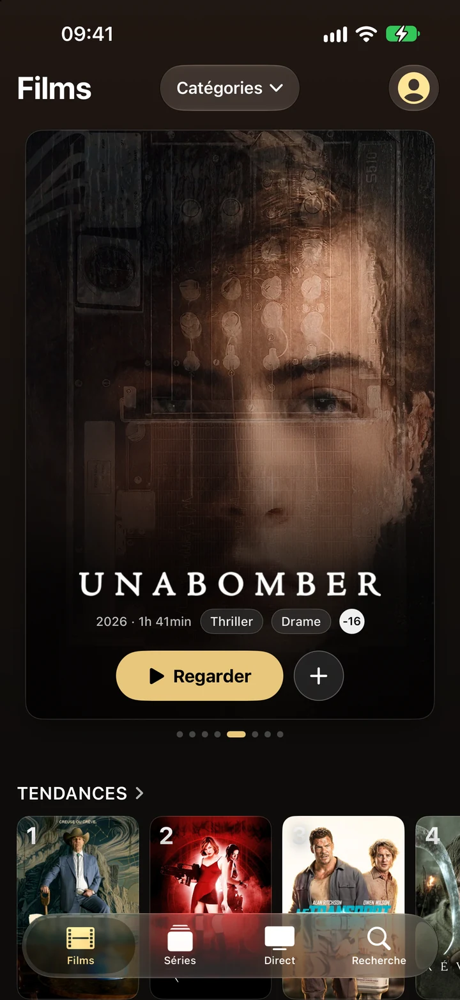
Votre fournisseur‹ Faites glisser : voilà la différence ›Trunk
Ce qui passe, sous chaque chaîne.
Le programme en cours et le suivant, avec la barre qui montre où en est l'émission. Chaque chaîne prend la couleur de son logo, comme dans l'app.
Aucun compte. Aucune publicité. Aucun suivi.
Vos identifiants restent dans le Trousseau de votre iPhone, comme vos mots de passe. Le catalogue est chiffré sur l'appareil. Ni inscription, ni serveur à nous.
Gratuit, et précisément.
Trunk
Gratuit, pour toujours
- Une playlist
- Lecture illimitée, sans limite de temps
- Films, Séries, Direct et Recherche
- Catalogue enrichi et guide TV
- Aucune publicité
Trunk Plus
14 jours d'essai, puis au mois ou à l'année
- Bandes-annonces et titres similaires
- Tendances de la semaine
- Ma liste et chaînes favorites
- Historique et reprise de lecture
- AirPlay, sous-titres et pistes audio
- Playlists illimitées
L'abonnement se renouvelle automatiquement sauf résiliation au moins 24 heures avant la fin de la période. Il se gère dans les réglages de votre compte Apple.
Avant de commencer.
Trunk fournit-il des chaînes ?
Non. Trunk est un lecteur. Les chaînes, films et séries viennent de la source IPTV que vous y ajoutez.
Que faut-il pour l'utiliser ?
Une playlist M3U ou des identifiants Xtream Codes, et un iPhone sous iOS 26.
Où vont mes identifiants ?
Dans le Trousseau d'iOS. Seul le serveur de votre fournisseur les reçoit.
En quelles langues ?
Français, anglais, espagnol, allemand, italien et portugais du Brésil.